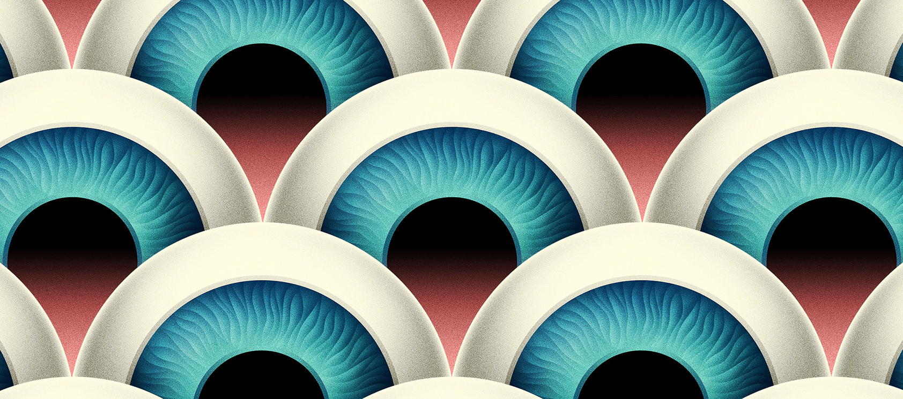

La Boca

The studio, founded in 2002, is based in west London and has many awards. Their psychedelic style is the combined result of each of the studio's members' unique influences. “We work as a studio, so most of our designs are created as a team,” says Scott Bendall of La Boca.